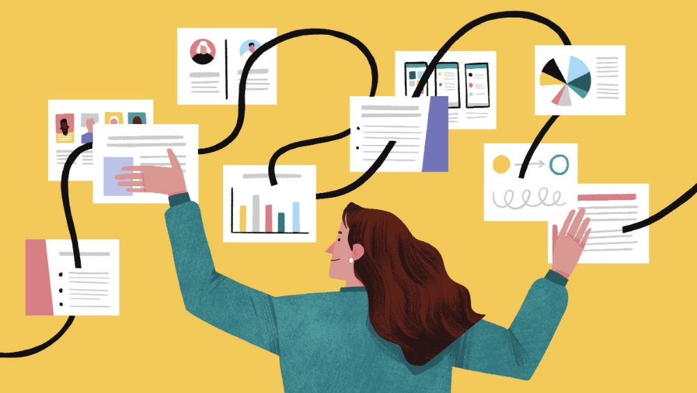

Menjadi Tempat Bercerita
Anak butuh ruang aman untuk membicarakan minat dan kekhawatirannya tentang masa depan, tanpa takut dihakimi.
Panduan untuk orang tua siswa SMA
Panduan Jurusan disusun khusus untuk Bapak/Ibu, agar lebih mudah memahami pilihan-pilihan jurusan kuliah yang ada — tanpa istilah rumit — supaya bisa mendampingi anak mengambil keputusan dengan tenang.

Untuk Bapak/Ibu
Anak sering merasa lebih yakin mengambil keputusan besar ketika ada orang tua yang mendengarkan dan ikut berdiskusi, bukan sekadar menentukan.
Anak butuh ruang aman untuk membicarakan minat dan kekhawatirannya tentang masa depan, tanpa takut dihakimi.
Pengalaman hidup orang tua bisa membantu anak melihat sisi realistis dari sebuah pilihan jurusan.
Dukungan yang tulus membuat anak lebih percaya diri menjalani jurusan pilihannya, apa pun hasilnya nanti.
Katalog singkat
Berikut gambaran singkat beberapa jurusan yang sering dipilih, dijelaskan dengan bahasa sederhana.
Belajar merancang dan membuat program komputer, aplikasi, hingga website. Cocok untuk anak yang suka logika dan memecahkan masalah.
Mempelajari tubuh manusia dan cara menangani penyakit. Membutuhkan waktu belajar yang panjang, tapi hasilnya sangat dibutuhkan masyarakat.
Mempelajari cara kerja pikiran dan perilaku manusia. Cocok untuk anak yang senang mendengarkan dan memahami orang lain.
Belajar mengelola dan mencatat keuangan perusahaan. Jurusan ini banyak dicari karena hampir semua bisnis butuh pengelolaan keuangan yang rapi.
Belajar menyampaikan pesan lewat gambar, warna, dan tampilan visual. Cocok untuk anak yang senang menggambar atau berkreasi.
Mempelajari peraturan dan sistem keadilan di masyarakat. Cocok untuk anak yang senang berdiskusi, membaca, dan berargumen secara runtut.
Langkah praktis
Beberapa langkah sederhana yang bisa didiskusikan bersama anak di rumah.
Tanyakan pelajaran atau kegiatan apa yang paling disukai anak selama ini, tanpa langsung menghubungkannya dengan jurusan tertentu.
Luangkan waktu membaca tentang jurusan yang diminati anak, lalu diskusikan apa yang dipelajari dan prospeknya.
Diskusikan secara terbuka soal biaya, lokasi kuliah, dan kesiapan anak, agar keputusan yang diambil realistis untuk semua pihak.
Setelah berdiskusi, biarkan anak yang mengambil keputusan akhir. Dukungan orang tua akan membuat anak lebih bertanggung jawab pada pilihannya.
Tentang pembuat
Website ini dibuat sebagai bagian dari proses belajar dasar pemrograman web.
Sering ditanyakan
Jawaban singkat atas kekhawatiran yang paling sering disampaikan orang tua.
Itu wajar. Ajak anak fokus pada 2-3 pilihan yang paling mendekati minatnya, lalu bandingkan secara sederhana daripada mencoba memutuskan semuanya sekaligus.
Jurusan memberi bekal ilmu, tapi banyak orang bekerja di bidang yang tidak selalu sama persis dengan jurusan kuliahnya. Yang penting anak terus belajar dan berkembang.
Cobalah berdiskusi dengan tenang, dengarkan alasan anak, dan sampaikan juga kekhawatiran orang tua tanpa memaksakan keputusan.